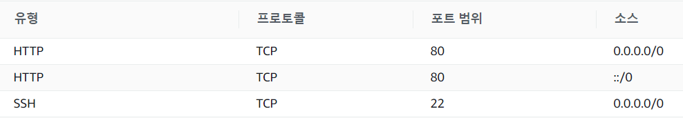
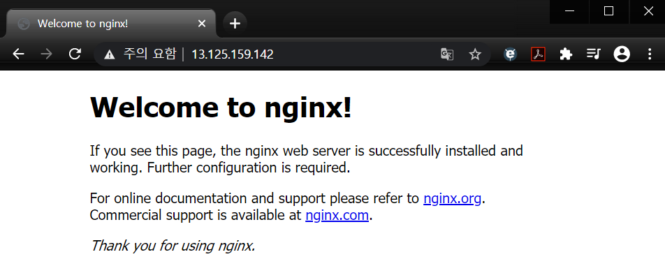
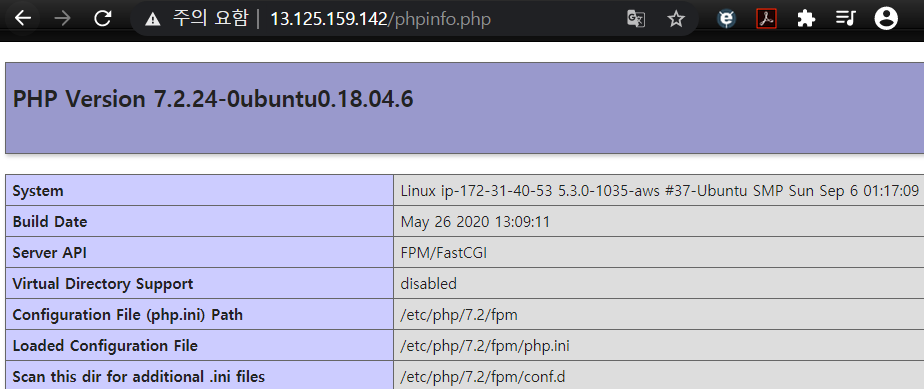
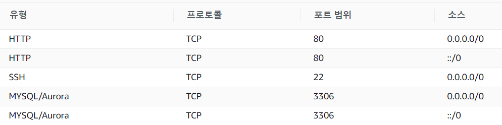
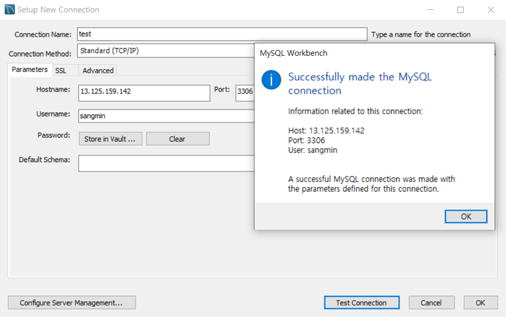

Situation
현재 AWS 클라우드 서비스에 서버를 구축해놨다.
| Server Program | Back-end Language | DBMS (+DB) |
|---|---|---|
Nginx |
PHP |
MySQL |
chrome 웹 브라우저를 클라이언트라고 생각하고 서버에 외부 접속하는 방법을 알아보겠다.
Nginx

인바운드 규칙에 HTTP를 추가하고 인스턴스의 IP 주소로 들어가면 Welcome to nginx! 문장이 우릴 맞아준다. nginx가 잘 설치된 것은 물론 외부 접속에 성공했다는 것을 의미한다.

PHP
phpinfo 파일 작성
$ sudo vi /var/www/html/phpinfo.php
<?php
phpinfo();
?>

phpmyadmin 설치
phpMyAdmin은 웹 브라우저에서 MySQL 이나 MariaDB 를 관리할 수 있게 해주는 소프트웨어이다.
$ apt install phpmyadmin
이후 설치 과정은 갈루아의 반서재라는 블로그에 굉장히 자세하게 나와 있으니 참고하면 될 것 같다.
MySQL
$ sudo vi /etc/mysql/mysql.conf.d/mysqld.cnf
...
bind-adress = 0.0.0.0
...

인바운드 규칙에 MySQL을 추가하면 3306 포트가 자동으로 설정된다. AWS 에 접속할 계정을 하나 생성해보자.
$ mysql -u root -p
mysql> CREATE user '[USER_NAME]'@'%' identified BY '[USER_PASSWD]';
mysql> grant all privileges on *.* to '[USER_NAME]'@'%' with grant option;
mysql> exit;
$ sudo service mysql restart
MySQL Workbench에서 확인
새로운 커넥션을 만들어 Hostname 에는 AWS instance IP를, Username 에는 위에서 생성한 USER_NAME을 입력하여 테스트 커넥션을 진행한다. 아래와 같으면 정상적으로 연결된 것이다.
